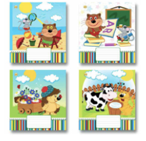
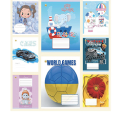

КАНЦЕЛЯРИЯ ДЛЯ ШКОЛЫ


Тетради школьные

Тетради 12 листов клетка

Тетради 36 листов
клетка
Тетради 36 листов
клетка
Тетради 36 листов
клетка
Тетради 36 листов
клетка
Тетради 36 листов
клетка
Тетради 36 листов
клетка
Тетради 36 листов
клетка
Тетради 36 листов
клетка
Тетради 36 листов
клетка
ДЛЯ РИСОВАНИЯ И ЧЕРЧЕНИЯ
Тетради 12 листов
клетка
Тетради 36 листов
клетка
Тетради 36 листов
клетка
Тетради 36 листов
клетка
Тетради 36 листов клетка
Тетради 36 листов
клетка
Тетради 36 листов
клетка
Тетради 36 листов
клетка
Тетради 36 листов
клетка
Тетради 36 листов
клетка
Канцелярия для школы – когда самое необходимое под рукой!
Канцтовары для школы у всех детей, а иногда и у взрослых, вызывают множество положительных эмоций и воспоминаний. При виде стопок новых тетрадей, упаковок ручек и фломастеров, красок и альбомов хочется сразу отложить дела и начать рисовать, считать или достать новенький пластилин и сделать какого-нибудь зверя.
Но в то время, когда дети ищут только самое красивое, родители часто ищут возможность канцтовары для школы купить дешево. С нашей помощью вы сможете объединить эти желания. Ведь канцелярия для школы в нашем магазине удовлетворит самый изысканный вкус, а родители смогут купить товары для школы оптом, а значит – недорого.
Что такое канцелярия для школы?
Под названием канцтовары для школы прячется множество предметов, без которых трудно представить рабочий день школьника. Начиная от разноцветных ручек и обычной тетради до деталей домашней поделки, а ведь это все еще и нужно положить в удобный и красивый рюкзак.
В интернет-магазине TOD мы собрали все, что может понадобится юным исследователем школьных лабиринтов, и предусмотрительно разложили в следующие категории:
- Тетради школьные
- Товары для рисования и черчения
- Рюкзаки и пеналы
- Товары для творчества
Канцелярия для школы в этих группах имеет свое разветвление, поэтому у вас нет шансов не найти нужный товар.
Кому понадобится наш интернет-магазин канцтоваров для школы?
Ученики далеко не единственная аудитория, которая пользуется канцтоварами. Канцелярия для школы пригодится:
Родителям – заботливые мамы и папы всегда стремятся обеспечить ребенка всем необходимым;
Учителям – преподаватели учебных заведений знают, как неудобно, когда под рукой нет красной ручки. Предостерегите себя от нежелательных хлопот – купите все заранее;
Администрациям учебных заведений – от детского садика до университета, от пластилина до огромных
папок для хранения письменных работ студентов;
Студентам – обеспечьте себя подручными
товарами до начала обучения, чтобы полностью погрузиться в учебный процесс и не отвлекаться
по мелочам.
Канцелярия для школы оптом – залог спокойствия родителей
Купив канцелярские товары для школы оптом, вы не столкнетесь с проблемой отсутствия ручки у ребенка, когда придется делать домашнее задание. И у вас точно будет из чего помочь сделать домашнюю заготовку, о которой вам сказали только вечером перед ее сдачей.
Как правильно выбрать и купить канцелярские товары для школы?
Канцелярия для школы обычно покупается родителями, которые полагаются на свой вкус и выбирают то, что понравилось им. Но идеальным решением будет смотреть канцтовары для школы вместе с ребенком, чтобы выбрать самый красивый рюкзак, где будут обитать ручки, наклейки и тетрадки с обложками, которые обожает ваш ребенок.
Если же вы покупаете канцтовары для другого предназначения, то при выборе руководитесь ограничениями вашего учебного заведения, если такие есть, или просто на свой вкус.
Обычно спрос на канцтовары для школьников возрастает с окончанием лета, поскольку приближается учебный период. Но, вместе со спросом растет и цена. Поэтому умным решением будет купить все для школы оптом после окончания учебного года или немного позже. Также хорошим вариантом будет покупать в течении года и постоянно пополнять запасы.

Где лучше всего купить канцтовары для школы оптом?
Самый быстрый и удобный способ купить канцелярию для школы дешево – это зайти на наш сайт. В нашем магазине вы найдете все необходимое для того, чтобы собрать ребенка к началу учебного года. Все канцтовары для школы предоставлены в понятных товарных группах, а благодаря удобной навигации потраченное время сведется к минимуму. Если же вы не нашли нужного товара в каталоге, то введите название в поле поиска и система сделает все за вас.
Преимущества покупки на нашем сайте:
- Быстрота - оформление заказа займет всего несколько минут;
- Дешево - купите все для школы оптом и с приятными скидками;
- Удобная оплата - сразу после подтверждения заказа менеджером, вы можете оплатить покупку по реквизитам, на карту Приватбанка или наложенным платежом;
- Большой выбор – канцелярия для школы у нас представлена в самом широком ассортименте среди других онлайн-магазинов;
- Количество – у нас нет минимального заказа, а оптовые заказы на сумму от 4000 грн. доставляются бесплатно.
Где можно получить заказ?
Получить заказанные канцтовары для школы можно в следующих городах: Киев, Запорожье, Харьков, Днепр, Львов, Закарпатье, Хмельницкий, Черновцы, Одесса, Черкасы, Николаев, Тернополь, Сумы, Волынь, Кропивницкий, Ивано-Франковски в других городах Украины, где есть отделения Новой почты, Укрпочты или Деливери.